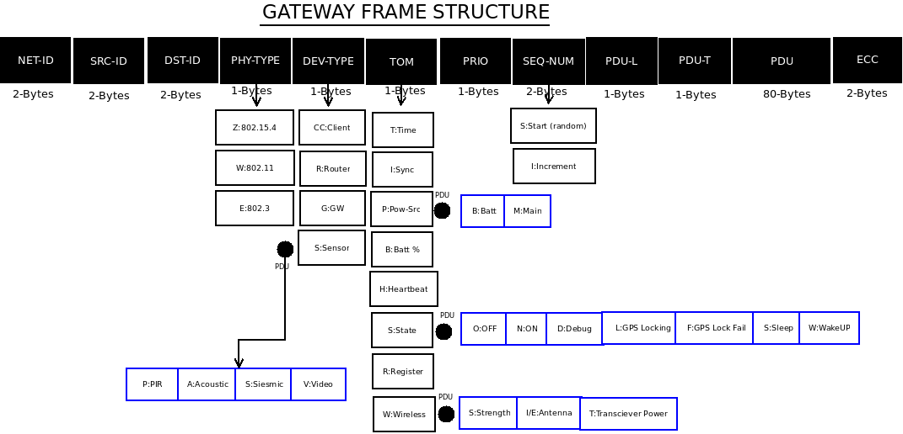

Week 11-12 Linux IoT Training¶

Frame Structure for WSN Gateway Firmware
Frame Definition¶
| Description | Network-ID | Source-ID | Destination-ID | Physical-Type | Device-Type | Type-Of-Message | Priority | Sequence-Number | PDU-Length | PDU-Type | PDU | Encrytion |
| Field | NET-ID | SRC-ID | DEST-ID | PHY-TYPE | DEV-TYPE | TOM | PRIO | SEQNUM | PDU-L | PDU-T | PDU | ECC |
| Variable (V) / Fixed Length | F | F | F | F | F | F | F | F | F | F | V | V |
| Byte Length | 2 | 2 | 2 | 1 | 1 | 1 | 1 | 2 | 1 | 1 | 80 | 2 |
Total Length: 16 - 96 Bytes
Valid PHY-TYPE Values¶
| PHY-TYPE | Description | PDU |
|---|---|---|
| Z | ZigBee: 802.15.4 | |
| W | Wireless: 802.11 | |
| E | Ethernet: 802.3 |
|
Valid DEV-TYPE Values¶
Valid TOM Values¶
| TOM | Description | PDU |
|---|---|---|
| T | Time Synchronization | |
| I | Sequence Number & Increment Synchronization | |
| P | Type Of Power Source |
|
| B | Battery Information (%) | |
| H | Heart-Beat | |
| S | State Of Device |
|
| R | Registration / Authentication | |
| W | Wireless |
|
Valid SEQNUM Values¶
| SEQNUM | Description |
|---|---|
| S | Start Sequence Number (randomly generated) 0-255 |
| I | Increment in Sequence Number (random) 0-25 |